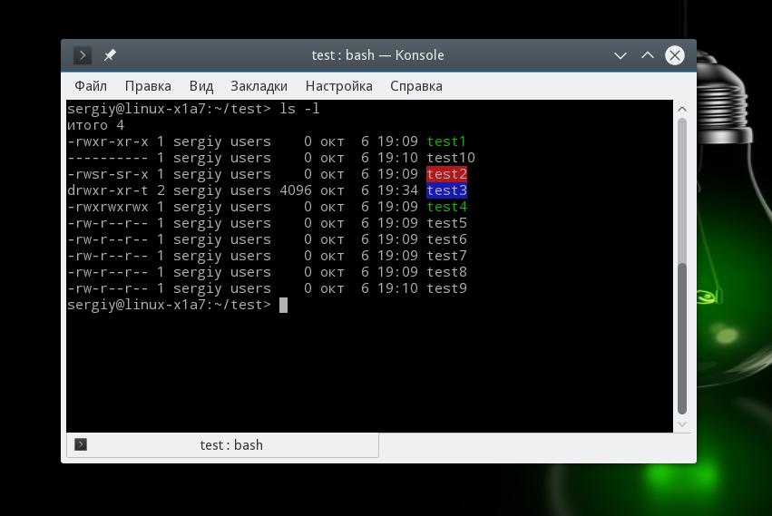
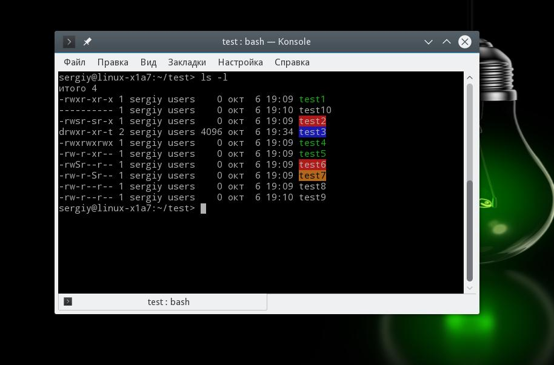

Права доступа к файлам в Linux
Система Обновлено: 9 октября, 2020 5 admin
В операционной системе Linux есть много отличных функций безопасности, но она из самых важных - это система прав доступа к файлам. Linux, как последователь идеологии ядра Linux в отличие от Windows, изначально проектировался как многопользовательская система, поэтому права доступа к файлам в linux продуманы очень хорошо.
И это очень важно, потому что локальный доступ к файлам для всех программ и всех пользователей позволил бы вирусам без проблем уничтожить систему. Но новым пользователям могут показаться очень сложными новые права на файлы в linux, которые очень сильно отличаются от того, что мы привыкли видеть в Windows. В этой статье мы попытаемся разобраться в том как работают права файлов в linux, а также как их изменять и устанавливать.
Основные права доступа к файлам в Linux
Изначально каждый файл имел три параметра доступа. Вот они:
Но все эти права были бы бессмысленными, если бы применялись сразу для всех пользователей. Поэтому каждый файл имеет три категории пользователей, для которых можно устанавливать различные сочетания прав доступа:
Именно с помощью этих наборов полномочий устанавливаются права файлов в linux. Каждый пользователь может получить полный доступ только к файлам, владельцем которых он является или к тем, доступ к которым ему разрешен. Только пользователь Root может работать со всеми файлами независимо от их набора их полномочий.
Но со временем такой системы стало не хватать и было добавлено еще несколько флагов, которые позволяют делать файлы не изменяемыми или же выполнять от имени суперпользователя, их мы рассмотрим ниже:
Специальные права доступа к файлам в Linux
Для того, чтобы позволить обычным пользователям выполнять программы от имени суперпользователя без знания его пароля была придумана такая вещь, как SUID и SGID биты. Рассмотрим эти полномочия подробнее.
Теперь давайте рассмотрим как посмотреть и изменить права на файлы в Linux.
Как посмотреть права доступа к файлам в Linux
Конечно, вы можете посмотреть права доступа к файлам в Linux с помощью файлового менеджера. Все они поддерживают эту функцию, но так вы получите неполную информацию. Для максимально подробной информации обо всех флагах, в том числе специальных, нужно использовать команду ls с параметром -l. Все файлы из каталога будут выведены в виде списка, и там будут показаны все атрибуты и биты.
Чтобы узнать права на файл linux выполните такую команду, в папке где находится этот файл:
ls -l

За права файлов в linux тут отвечают черточки. Первая это тип файла, который рассмотрен в отдельной статье. Дальше же идут группы прав сначала для владельца, для группы и для всех остальных. Всего девять черточек на права и одна на тип.
Рассмотрим подробнее, что значат условные значения флагов прав:
В нашем примере, файл test1 имеет типичные разрешения для программ, владелец может все, группа только чтение и выполнение, а все остальные - только выполнение. Для test2 дополнительно установлен флаг SUID и SGID. А для папки test3 установлен Sticky-bit. Файл test4 доступный всем. Теперь вы знаете как посмотреть права на файл linux.
Как изменить права файла в Linux
Чтобы изменить права на файл в linux вы можете использовать утилиту chmod. Она позволяет менять все флаги, включая специальные. Рассмотрим ее синтаксис:
$ chmod опции категориядействиефлаг файл
Опции сейчас нас интересовать не будут, разве что только одна. С помощью опции -R вы можете заставить программу применять изменения ко всем файлам и каталогам рекурсивно.
Категория указывает для какой группы пользователей нужно применять права, как вы помните доступно только три категории:
Действие может быть одно из двух, либо добавить - знак "+", либо убрать - знак - "-". Что касается самих прав доступа, то они аналогичны выводу утилиты ls: r - чтение, w - запись, x - выполнение, s - suid/sgid, в зависимости от категории, для которой вы его устанавливаете, t - устанавливает sticky-bit. Например, всем пользователям полный доступ к файлу test5:
chmod ugo+rwx test5
Или заберем все права у группы и остальных пользователей:
chmod go-rwx test5
Дадим группе право на чтение и выполнение:
chmod g+rx test5
Остальным пользователям только чтение:
chmod o+r test5
Для файла test6 установим SUID:
chmod u+s test6
А для test7 - SGID:
chmod g+s test7
Посмотрим что получилось:
ls -l

Как видите, изменить права на файл в Linux очень просто. К тому же вы можете изменить основные права с помощью файлового менеджера.
Вот и все, теперь вы знаете не только что такое права доступа к файлам в Linux, но и как их посмотреть, и даже как их изменить. Это очень важная тема, в которой действительно стоит разобраться новичкам, чтобы использовать свою систему более полноценно. Если у вас остались вопросы, спрашивайте в комментариях!